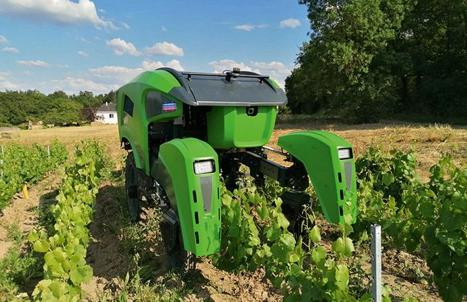

23 juil. 2020
Trektor, robot issu du projet de recherche Pumagri, est en cours de fabrication en présérie chez le constructeur Sitia.
Le concessionnaire Jarny en Pays de la Loire est en train de le tester en interne. « Trektor est un tracteur autonome, précise Dominique Turpin, chargé de mission en développement durable chez Jarny. Fourni avec un relevage trois points arrière, il est capable de faire fonctionner les outils standards, notamment pour le travail du sol. Il est également étudié pour intervenir dans différentes cultures, à des largeurs et des hauteurs différentes.
Article original : Ici